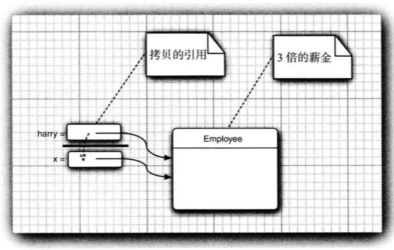
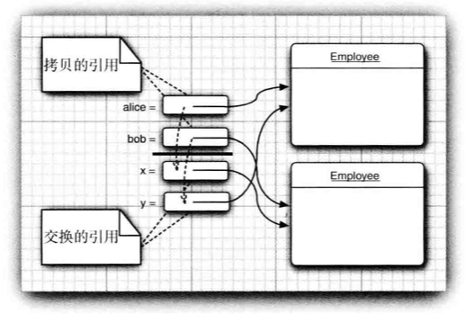

4.1 面向对象程序设计概述
面向对象程序设计（OOP）是现在的主流程序设计范型。Java是完全面向对象的。
传统的结构化程序要求用一系列的过程（算法）来求解问题，Pascal语言的设计者Niklaus Wirth将其著作命名为《Algorithm + Data Structures = Programs》，但是OOP却调换了这个顺序，首先关注数据，再考虑操作数据的算法。
对于规模较小的问题分解为过程的开发方式比较理想，面向对象适合于解决规模较大的问题。
4.1.1 类
类（class）是构造对象的模版或蓝图。由类构造（construct）对象的过程称为创建类的实例（instance）。
封装（encapsulation）从形式上看是将数据和行为组合在一个包中，并对对象的使用者隐藏了数据的实现方式。对象中的数据称为实例域（instance field），操纵数据的过程称为方法（method）。对于每个特定的对象都有一组特定的实例域值，这些值的集合表示这个对象的当前状态（state）。实现封装的关键在于绝对不能让类中的方法直接访问其他类的实例域。程序只能通过对象的方法与对象的数据进行交互。
继承（inheritance）指通过扩展一个类来建立另外一个新的类。事实上在Java中所有的类都源于Object类。扩展已有类时，扩展之后的新类拥有被扩展类的全部属性和方法，还有自己的新属性和新方法。
4.1.2 对象
对象有三个主要特征：
- 对象的行为（behavior）——可以对对象施加哪些方法？
- 对象的状态（state）——施加方法时，对象如何响应？
- 对象标识（identity）——如何辨别具有相同行为与状态的不同对象
对象的行为是用可调用的方法定义的。
对象的状态改变必须通过调用方法实现（如果不经方法调用就能改变，说明封装性遭到破坏）。
每个对象有唯一的身份标识，作为一个类的实例，不同对象的标识永远是不同的。
4.1.3 识别类
与传统过程化程序设计不同，OOP的程序设计首先从设计类开始，然后往每一个类中添加方法。识别类的简单规则就是在分析问题的过程中寻找名词，方法则是相应的动词。
4.1.4 类与类之间的关系
依赖（dependence）：“use a”的关系，类A的方法操纵类B的对象，则A依赖于B。应该尽可能减少相互依赖的类，即让类之间的耦合度最小。
聚合（aggregation）：“has a”的关系，类A的对象包含类B的对象，则A和B是聚合关系。
继承（inheritance）：“is a”的关系，类A扩展类B，则A继承于B。
4.2 使用预定义类
4.2.1 对象与对象变量
构造器（constructor）用于构造新的实例，它是一个特殊的方法，用来构造并初始化对象。
构造器的名字与类名相同，使用构造器时在前面加上new操作符。
new Data();
System.out.println(new Data());
String s = new Data().toString();
Data birthday = new Data();在前三个例子中，对象仅被使用了一次，如果要多次使用对象，将对象存放在一个变量中，这个变量引用这个对象。

对象与变量有着重大区别，Data deadline;，这个语句定义了一个对象变量deadline，但是它本身不是一个对象，此时也没有引用任何对象，无法将Data类的方法用于这个变量。
因此对象变量定义后一定要先进行初始化再使用，可以使用新构造的变量来初始化变量，也可以引用一个已经存在的对象。
deadline = new Data();
// or
deadline = birthday;此时变量birthday和deadline引用的是同一个对象。

可以显示地将对象变量设置为null，表明这个变量目前没有引用任何对象，也不能使用任何方法。
注意：对于局部变量，它们不会自动初始化为null！必须手动进行初始化。
4.2.2 更改器与访问器方法
更改器方法（mutator method）调用后会改变对象状态，比如最常见的set方法。
访问器方法（accessor method）只访问对象但是不做任何修改，比如最常见的get方法。
4.3 用户自定义类
4.3.1 Employee类
import java.time.*
public class EmployeeTest {
public static void main(String[] args) {
// fill the staff array with three Employee objects
Employee[] staff = new Employee[3];
staff[0] = new Employee("Carl Cracker", 75000, 1987, 12, 15);
staff[1] = new Employee("Harry Hecker", 50000, 1989, 10, 1);
staff[2] = new Employee("Tony Tester", 40000, 1990, 3, 15);
// raise everyone's salary by 5%
for (Employee e : staff) {
e.raiseSalary(5);
}
// print out information about all Employee objects
for (Employee e : staff) {
System.out.println("name = " + e.getName() + ", salary = " + e.getSalary() + ", hireDay = " + e.getHireDay());
}
}
}
class Employee{
private String name;
private double salary;
private LocalData hireDay;
public Employee(String n, double s, int year, int month, int day){
name = n;
salary = s;
hireDay = LocalData.of(year, month, day);
}
public String getName(){
return name;
}
public double getSalary(){
return salary;
}
public LocalData getHireDay(){
return hireDay;
}
public void raiseSalary(double byPercent){
double raise = salary * byPercent/100;
salary += raise;
}
}这个示例程序中包含两个类：Employee类和带有public访问修饰符的EmployeeTest类。
EmployeeTest类包含了main方法，源文件名是EmployeeTest.java，文件名必须与public类的名字相匹配。 在一个源文件中， 只能有一个公有类， 但可以有任意数目的非公有类。
4.3.2 多个源文件使用
一般来说许多程序员都习惯于每一个类都存在于一个单独的源文件中，例如Employee类存放在Employee.java，EmployeeTest类存放在EmployeeTest.java。
这时编译也不需要单独javac每一个源文件，直接javac EmployeeTest.java，编译器发现EmployeeTest.java使用Employee类时会查找名为Employee.class的文件。 如果没有找到这个文件，就会自动地搜索Employeejava， 然后对它进行编译。如果Employee.java版本较已有的Employee.class 文件版本更新，Java编译器就会自动地重新编译这个文件。（可以理解为Java编译器内置了make工具。）
4.3.3 剖析Employee类
这个类所有方法都被标记为public，任何类的任何方法都可以调用这些方法。
这个类包含三个private实例域来存放将要操作的数据，，确保只有这个类自身的方法可以访问这些实例域，而其他类的方法不能读写。
这里的name和hireDay本身就分别是String类和LocalData类的对象，这种情况十分常见：类通常包括类型属于某个类类型的实例域。
4.3.4 构造器
- 构造器与类同名。
- 每个类可以有一个以上的构造器。
- 构造器可以有0个、1个或多个参数。
- 构造器没有返回值。
- 构造器总是伴随着new操作符一起使用。
- 不能对一个已经存在的对象调用构造器来达到重新设置实例域的目的。
注意：不要在构造器中定义与实例域重名的局部变量！
4.3.5 隐式参数与显示参数
public void raiseSalary(double byPercent){
double raise = salary * byPercent/100;
salary += raise;
}这个方法实际上有两个参数，一个参数称为隐式（implicit）参数，是出现在方法名前面的Employee类对象，第二个参数是显示（explicit）参数，是位于方法名后面括号中的数值。（隐式参数可以理解为方法调用的目标者或接受者）。
在每一个方法中，关键字this表示隐式参数。在实例域前面加上this.可以更好地区分局部变量与实例域。
public void raiseSalary(double byPercent){
double raise = this.salary * byPercent/100;
this.salary += raise;
}4.3.6 实现封装
为了不破坏程序的封装，通常不会使用public来标记这些实例域，此时要获得或设置实例域的值，采用的方法是：
- 一个private的数据域；
- 一个public的域访问器方法；
- 一个public的域更改器方法
注意：不要让访问器返回的是引用可变对象。比如：
class Employee{
private Data hireDay;
...
public Data getHireDay(){
returen hireDay; // Bad
}
}Data类与LocalData类不同之处在于，Data类有一个更改器方法setTime，可以设置毫秒数。
Employee harry = ...;
Date d = harry.getHireDay() ;
double tenYearsInMilliSeconds = 10 * 365.25 * 24 * 60 * 60 * 1000;
d.setTime(d.getTime() -(long) tenYearsInMilliSeconds);
// let's give Harry ten years of added seniority
此时d和harry.hireDay引用的是同一个Data对象，对d通过setTime进行更改就改变了harry.hireDay的私有状态！
如果需要返回一个可变对象的引用，应该先对它进行克隆（clone），对象克隆是指存放在另一个位置上的对象副本。
class Employee{
private Data hireDay;
...
public Data getHireDay(){
returen (Data) hireDay.clone(); // Good
}
}4.3.7 基于类的访问权限
通过调用一个对象的方法，可以访问这个调用对象的私有数据。调用方法还可以访问所属类的所有对象的私有数据。
class Employee{
...
public boolean equals(Employee other){
return name.equals(other.name);
}
}if(harry.equals(boss))...
这个时候，equals方法访问了harry的私有域，同时，还访问了boss的私有域，因为harry和boss都是Employee类的对象，Employee类的方法可以访问这个类的任何一个对象的私有域。
4.3.8 私有方法
用private关键字来实现私有方法。
4.3.9 final实例域
fianl实例域：构建对象时必须要被初始化，且在后面的操作中不能够更改。
final大都应用于基本（primitive）类型域，或不可变（immutable）类的域。如果类中的每个方法都不能修改其对象，这种类就是不可变类，比如String类。
4.4 静态域与静态方法
4.4.1 静态域
static域：每个类中只有一个这样的静态域。而每一个对象对于所有实例域都有自己的一份拷贝。
class Employee{
private static int nextId = 1;
private int id;
...
}对于1000个雇员对象，他们每一个都有自己的id，即存在1000个实例域id，但是他们共享一个nextId。即使没有一个雇员对象，静态域nextId也存在，它属于类，而不属于任何独立的对象。静态域也被称作类域。
4.4.2 静态常量
静态变量使用得比较少，静态常量却很常用。比如之前提到的Math类的静态常量：
public class Math{
...
public static final double PI = 3.1415926;
...
}使用Math.PI就可以获得这个常量。
最好不要将类的域设为public，因为这样每个类对象都可以修改公有域，但是静态常量可以设为public，因为被声明为final后的本来就不允许再进行更改了。
4.4.3 静态方法
静态方法：可以直接通过类名调用，且不能向对象实施操作。
静态方法没有隐式参数，因此不能访问类中的实例域，但是静态方法可以访问自身类中的静态域。
public static int getNextId(){
return nextId; // return static field
}
int n = Employee.getNextId();注意：理论上也可以通过对象来调用静态方法，但这样会造成混淆，最好不要使用。
静态方法适用于：
- 一个方法不需要访问对象状态，其所需参数都是通过显示参数提供的。
- 一个方法只需要访问类的静态域。
4.4.4 工厂方法
静态方法还有一个常见用途，可以作为静态工厂方法（factory method）来构造对象。比如NumberFormat类：
NumberFormat currencyFormatter = NumberFormat.getCurrencyInstance();
NumberFormat percentFormatter = NumberFormat.getPercentInstance();
double x = 0.1;
System.out.println(currencyFormatter.format(x)); // $0.10
System.out.println(percentFormatter.format(x)); // 10%为什么NumberFormat不使用构造器来完成这些操作呢？
- 无法命名构造器。构造器的名字必须与类名相同，但是这里需要两个不同的构造器。
- 当使用构造器时，无法改变所构造的对象类型。而这里的工厂方法将返回一个DecimalFormat类对象，这个类是NumberFormat的子类。
4.4.5 main方法
main方法毫无疑问是一个静态方法，它不对任何对象进行操作。事实上启动程序时没有任何一个对象，静态的main方法将执行并创建程序所需要的对象。
4.5 方法参数
根据C语言和C++的知识，函数的参数传递分为按值调用（call by value）和按引用调用（call by reference）。
- 前者表示方法接收的是调用者提供的值，后者表示方法接收的是调用者提供的变量地址；
- 前者不能修改传递值所对应的变量值，后者可以修改传递引用对应的变量值。
在Java中，参数总是按值调用，方法得到的是始终只是参数值的一个拷贝，不能修改传给它的任何变量的内容。
public static void tripleValue(double x) {
x *= 3;
}
double percent = 10;
tripleValue(percent);方法调用后percent的值还是10。具体执行过程为：
- x被初始化为percent值的一个拷贝即10；
- x乘等于3得到30，但是percent仍然为10；
- 方法结束后变量x无法再被使用。

但是Java中的方法参数也分两种情况：
- 基本数据类型（数字、布尔值）
- 对象引用
方法不能修改一个基本数据类型的参数，但是却可以修改对象引用的参数。
public static void tripleSalary(Employee x) {
x.raiseSalary(200);
}
harry = new Employee(...);
tripleSalary(harry);具体执行过程为：
- x被初始化为harry值的拷贝，这里被初始化为这个对象的一个新引用；
- raiseSalary方法应用于这个对象引用x，x和harry指向同一个对象，这个对象的Salary提高200%；
- 方法结束后，对象变量x不能再被使用，但是harry仍然指向进行修改后的对象。

注意：参数为对象引用时，虽然能改变对象的内容，但是这并不代表这就和C、C++一样是在按引用调用了！
public static void swap(Employee x, Employee y){
Employee temp = x;
x = y;
y = temp;
}
Employee a = new Employee("Alice"...);
Employee b = new Employee("Bob"...);
swap(a, b);这个方法执行后，a依然是“Alice”，b依然是“Bob”，因为swap并没有改变存储在变量a和b中的对象引用，x和y只是a和b的值的拷贝，并不是a和b的引用，执行结束x和y被丢弃，a和b纹丝不动。

总而言之，Java中方法的参数使用情况为：
- 一个方法不能修改一个基本数据类型的参数（数值、布尔）。
- 一个方法可以改变一个对象参数的状态。
- 一个方法不能让对象参数引用一个新的对象。
4.6 对象构造
4.6.1 重载
如果多个方法有相同的名字、不同的参数，就产生重载（overload）。有些类有多个构造器，它们拥有不同的构造参数。
4.6.2 默认域初始化
如果在构造器中没有显式地给域赋予初值，那么就会被自动赋值为默认值：数值0，布尔值false，对象引用为null（局部变量必须被明确初始化，不会默认赋值）。但是这不是一个好的编程习惯。
4.6.3 无参数的构造器
对象由无参数构造器创建时，其状态会被设置为适当的默认值。
如果在编写一个类时没有编写构造器，系统会提供一个无参数构造器，这个构造器将所有的实例域设置为默认值。
但是只要类中提供了至少一个构造器，系统就不会提供无参数的构造器。
4.6.4 显式域初始化
通过重载类的构造器方法，可以采用多种形式设置类的实例域初始状态。
也可以在类的定义中，直接给域赋初始值，初始值不一定是常量值，可以调用方法对域进行初始化。当一个类所有构造器都希望把相同的初值赋予某个特定实例域时这个方法很有用。
class Employee{
private static int nextId;
private int id = assignId();
...
private static int assignId(){
int r = nextId;
nextId++;
return r;
}
}4.6.5 参数名
通常，构造器的参数用单个字符命名。
public Employee(String n, double s){
name = n;
salary = s;
}这个方法缺陷在于只看n和s会不明就里，也有一个办法是在域名前面加前缀“a”。
public Employee(String aName, double aSalary){
name = aName;
salary = aSalary;
}还有一种常用方法，参数变量使用和实例域的同名，但是使用this。
public Employee(String name, double salary){
this.name = name;
this.salary = salary;
}4.6.6 调用另一个构造器
this除了指示方法的隐式参数，还可以指示同一个类的另一个构造器。
public Employee(double s){
// call Employee(String, double)
this("Employee #" + nextId, s);
nextId++;
}4.6.7 初始化块
前面的两种初始化数据域方法包括：
- 在构造器中设置值
- 在声明中赋值
还可以通过初始化块（initialization block）来初始化数据域。在一个类的声明中可以包含多个代码块，只要构造类的对象，这些块就会被执行。
class Employee{
private static int nextId;
private int id;
private String name;
private double salary;
// object initialization block
{
id = nextId;
nextId++;
}
...
public Employee(String n, double s){
name = n;
salary = s;
}
public Employee(){
name = "";
salary = 0;
}
}静态域可以通过提供一个初始化值，或者使用一个静态的初始化块来进行初始化。
private static int nextId = 1;
// or
static{
Random generator = new Random();
nextId = generator.nextId(10000);
}4.7 包
Java允许使用包（package）将类组织起来，借助于包可以方便地组织自己的代码，并将自己的代码与别人提供的代码库分开管理。
标准的Java类库分布于多个包中，包括java.lang、java.util、java.net等。
使用包可以保证类名的唯一性，比如两个程序员都建立了Employee类，只要将这俩类放置在不同包中，就不会产生冲突。
为了保证包名的绝对唯一性，Sun公司建议将公司的因特网域名（独一无二）以逆序形式作为包名，并对不同项目使用不同子包。比如vor.ink，包名就是ink.vor。
4.7.1 类的导入
一个类可以使用其所属包中的所有类，以及其他包中的公有类（public class），可以采用两种方式访问其他包的公有类：
- 在每个类名之前添加完整包名：
java.time.LocalData today = java.time.LocalData.now(); - 使用import导入类：
import java.time.LocalData;，使用时就不用加完整包名的前缀了：LocalData today = LocalData.now();
这个import只导入了LocalData这个特定类，也可以使用import java.util.*;导入java.util包中的所有类。
注意：使用*只能导入一个包的所有类，而不能用于导入所有包，比如import java.*;或import java.*.*;这样的语句是不允许的。
如果两个包都有同一个名称的类，比如import java.util.*;和import java.sql.*;都有Date类，这时直接使用Date today;编译器会报错，因为它不能确定使用的是哪一个Data类。这时可以再增加一条import语句来明确使用的是哪一个包的类，比如import java.util.Date;，这时就能明确使用的是util包下的Date类。如果想要两个Date类都使用，那只能在每个类前加上完整包名前缀了。
4.7.2 静态导入
import不仅可以导入类，还可以导入静态方法和静态域。
import static java.lang.System.*;
这条语句导入了System类的所有静态域和静态方法，因此要使用它们时就不用加前缀了。
out.println("Goodbye, cruel world!"); // System.out
exit(0); // System.exit也可以明确指出想要导入的特定静态域或静态方法。
4.7.3 将类放入包中
想要将类放入包中，需要在源文件开头使用package语句，并将源文件放到与完整包名匹配的子目录下，比如包com.horstman.corejava的源文件放置于子目录com/horstman/corejava中。编译器也会将生成的类文件放在相同的目录结构中。
package com.horstman.corejava;
public class Employee{
...
}如果一个源文件没有package语句，它将被放入一个默认包（default package）中，默认包是一个没有名字的包。
4.7.4 包作用域
- 标记为
public的部分可以被任意的类使用。 - 标记为
private的部分只能被定义它们的类使用。 - 没有标记的部分（类、方法或变量）可以被同一个包中的所有方法访问。
不做公有私有标记对类来说是合理的，但是对变量来说会破坏程序的封装性。
4.8 类路径
（略）
4.9 文档注释
（略）
4.10 类设计技巧
- 一定要保证数据私有
- 一定要对数据初始化
- 不要在类中使用过多的基本类型
- 不是所有的域都需要独立的域访问器或域更改器
- 将职责过多的类进行分解
- 类名与方法名要体现它们的职责
- 优先使用不可变的类